| SOURCE | TITLE| IMAGE MATCH | click to source page |
| eBay | Radio Chinese Stamps for sale | eBay | 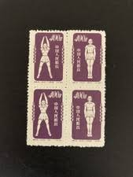 |
| eBay | CHINESE RADIO GYMNASTICS, COMMUNIST ERA STAMP BLOCK. UNHINGED | eBay | 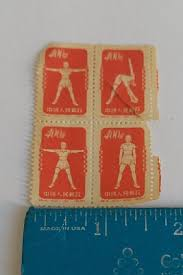 |
| oxbridgeic.co.uk | People Republic of China Radio 1954 Complete Set of Blocks of 4 Used | 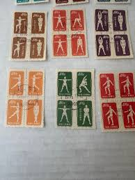 |
| ifs.rs | People's Republic Of China 1955 Radio Gymnastics Complete Set Used | 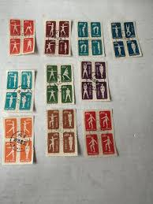 |
| OfferUp | Radio made in china for Sale in Warren, MI - OfferUp | 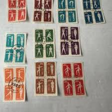 |
| eBay | China Stamps 1952 for sale | eBay | 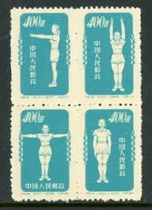 |
| Invaluable.com | Sold at Auction: CHINA Stamp Collection, High CV, 1 of 3 | 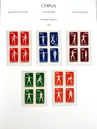 |
| www.wcc.ac | 1955 Peoples Republic Of China Radio Stamps Blocks With Perking Cancellations | 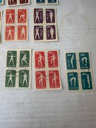 |
| eBay | China Sport set 4 Blocks of 4 1952 MNH A-10 | eBay | 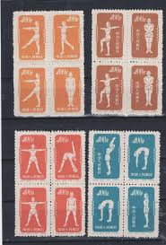 |
| Stamp Auction | Kelleher and Rogers Limited Sale - 39 Page 42 | 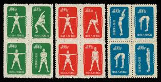 |
| HipStamp | China Peoples Republic 1952 Radio Gymnastics REPRINT Complete (10 ) VF/NH(**) | Asia - China, General Issue Stamp / HipStamp | 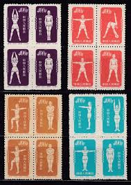 |
| Stamp Auction | Sparks Auctions Sale - 21 Page 11 | 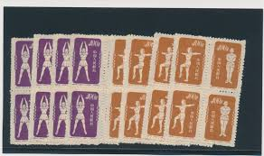 |
| eBay | PR China Stamps S1-S12 Outdated Money hundreds Yuan all 12 sets 82 mint | eBay | 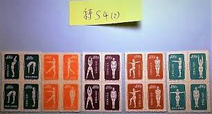 |
| Stamp Auction | Prices Realized | 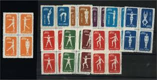 |
| us-china-stamps.com | Many China, USA, USSR & Worldwide Postal Stamps from my 60 years Collection 中国、美国、苏联及世界各国邮票 |  |
| eBay UK | Radio Chinese Stamps for sale | eBay UK | 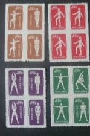 |
| eBay | China S4 Gymnastics By Radio - Reprint Set of 40v Used in Pairs (SL078) | eBay | 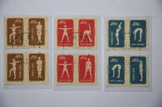 |
| eBay | China PRC Stamps MNH Lot Of 5 Early Blocks | eBay | 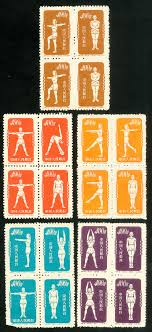 |
| Blogger.com | Stamp Art: 2014-07-06 | 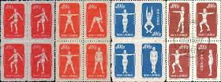 |
| Etsy | Vintage China Stamps Post 1949 - Etsy Australia |  |
| PicClick | CHINA - "GYMNASTICS" - Lot Of 9 Old Stamps - Unused!! $1.99 - PicClick | 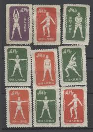 |
| eBay | China (PRC) 148d MNG Block of 10 2015 CV $399.00 | eBay |  |
| Germanrings.lv | Matchbox Labels for sale | 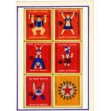 |
| eBay | BK0945 - PRC CHINA - 1952 Radio Gymnastics complete set REPRINT , 4 sets | eBay | 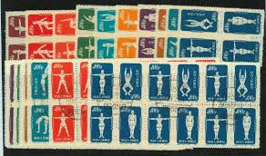 |
| eBay | China, Peoples Republic of - Scott 141-150 Reprints (1952) Mint NH VF, CV $55 C | eBay |  |
| eBay | CHINA P.R.C. SC# 142R, 149R, 150R BLOCK OF 4 EACH - REPRINTS - MNH | eBay | 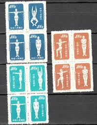 |
| HipStamp | China-1952-Sc# 142-Physical Exercises MNH Lower Half Sheet of 50 Stamps VF | Asia - China, General Issue Stamp / HipStamp | 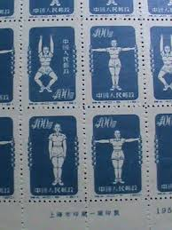 |
| eBay | 94761 - PRC CHINA - STAMPS - 1952 Radio Gymnastics Mi # 145-175 Fine USED | eBay | 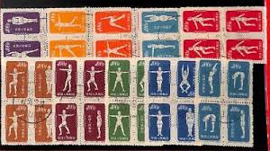 |
| eBay | 1952 China 141-150 Gymnastics by Radio, Reprint Full Set | eBay | 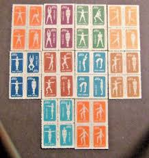 |
| eBay | China Sports Group of 17 Mint NG Lot#a5037 | eBay | 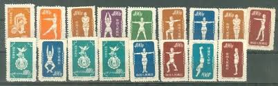 |
| eBay | CHINA SCOTT # 141-50 MINT NO GUM | eBay |  |
| Cherrystone Auctions | Kossoy Collection of Poland; U.S. & Worldwide Stamps - September 11-13, 2012 - CHINA - PRC | 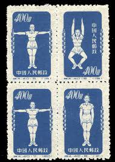 |
| HipStamp | CHINA PRC 1952 Scott #141//50 Sports. Mint 5 Diff Blks Appears Org | Asia - China, General Issue Stamp / HipStamp | 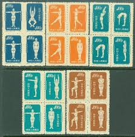 |
| eBay | PRC. 142. S4. 5-8. $400. Reprint. Gymnastics. Block of 4. CTO. NH. 1955 | eBay | 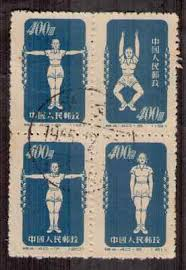 |
| eBay | CHINA - 1952 SELECTED PHYSICAL EXERCISE STAMPS REPRINTS BLK OF 4 - 6V MNH | eBay | 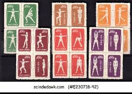 |
| eBay | China 1952 Physical Excercises $400 red orange block MNH | eBay | 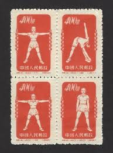 |
| eBay | CHINA 1952 GYMNASTICS BLOCKS 28 stamps...MINT LH | eBay |  |
| eBay UK | Radio Chinese Stamp Blocks for sale | eBay UK | 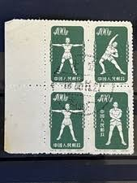 |
| X | Sobriety is the norm of life" Soviet matchbox label, 1985. | 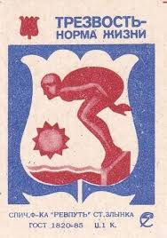 |
| eBay | 1951-1960 Year of Issue Postage Chinese Stamps for sale | eBay | 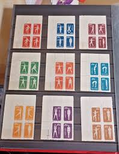 |
| Paul Fraser Collectibles | CHINA PRC GEN ISSUES 1952 postage stamp | 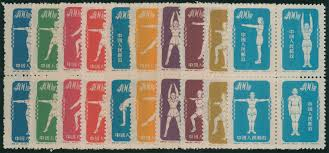 |
| eBay | China Peoples Republic Scott # 144 - MNH - CV=$140.00 (14-C186) | eBay | 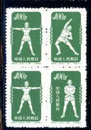 |
| eBay | 1996 Chinese New Year CP484 USPS 481 commemorative panel 3060 MNH block | eBay | 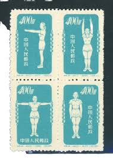 |
| Todocolección | 1992 china año del mono 20 fen, certificado asg - Buy Antique stamps of China on todocoleccion | 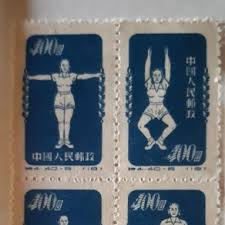 |
| Find Your Stamps Value | Physical Exercises - 体育锻炼$400 Sky blue stamp price, value | 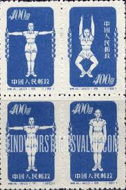 |
| eBay | CHINA PRC 1952 Sc#141-50 S4 Gymnastics Original Print Postal Used Set RARE | eBay |  |
| HipStamp | BK0945 - PRC CHINA - 1952 Radio Gymnastics complete set REPRINT set o 3 USED | Asia - China, Booklets Stamp / HipStamp | 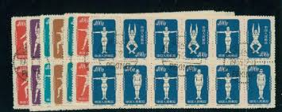 |
| eBay | 1955 CHINA Physical Exercises #141~150 Reprint MLH, Great condition. SV$55.00 | eBay | 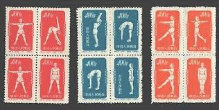 |
| HipStamp | Search "China 1952" / HipStamp | 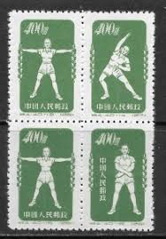 |
| eBay | China Stamp S4 1955 Radio Calisthenics Duplex Collection | eBay | 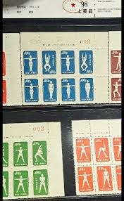 |
| eBay | China S4 1952 Gymnastics by Radio. Mixed Blocks Four. | eBay | 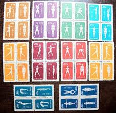 |
| HipStamp | Search "China 1952" in Asia > China / HipStamp | 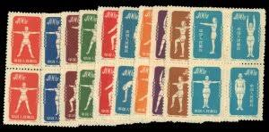 |
| eBay | CHINA PRC 141-50 SP20 | eBay | 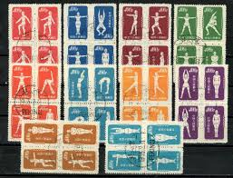 |
| eBay | 1952 PR China Sc #148 dull purple Radio Gymnastics Original print MNH NGAI | eBay | 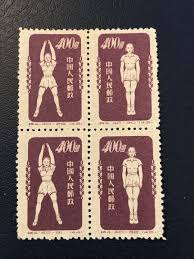 |
| Etsy | Lot of 6 Chinese Stamps “radio Gymnastics” 1952, Lot #608 - Etsy | 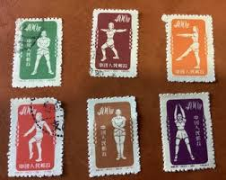 |
| eBay | China 1951-1952 Radio gymnastics Mint 8 Stamps, VF, See Photos | eBay | 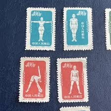 |
| PicClick UK | CHINA PR 1952 GYMNASTICS BY RADIO MNH no gum as issued Yang set S4R 40 stamps £47.50 - PicClick UK | 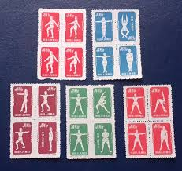 |
| eBay UK | PR China Stamps S1-S12 Outdated Money hundreds Yuan all 12 sets 82 mint | eBay UK | |
| eBay | China 1952 Physical Excercises $400 dull blue used block of 4 | eBay |